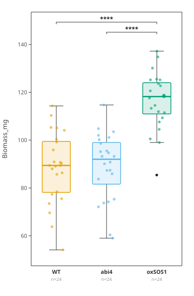

Browser-only · no install · your data stays put
Paste a spreadsheet. Leave with the figure and the statistics behind it.

Test chosen
Welch's ANOVA
F(2, 45.51) = 37.326
p = 2.5e-10
Post-hoc
Games-Howell
abi4 vs oxSOS1 · 9.6e-9
WT vs oxSOS1 · 1.8e-8
You download
.svg.png.Rmethods.txt
- 01
- 02
- 03
- 04